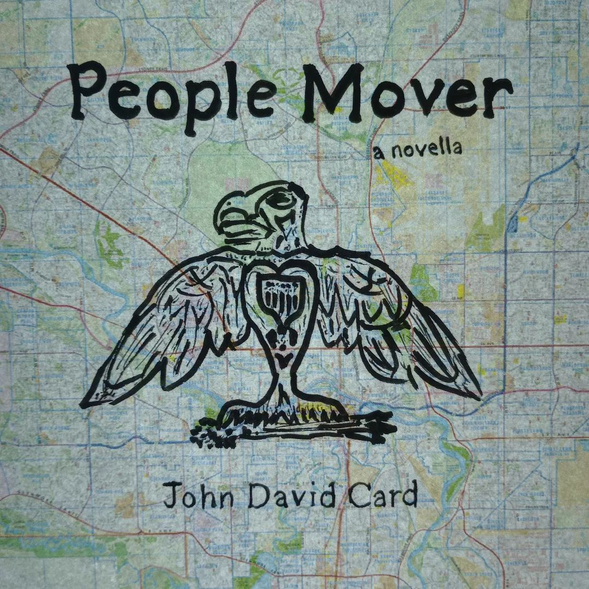

CARDPOSTING. com
personal website of John David Card — writer, artist, historian, and anarchist organiser
PEOPLE MOVER a novella
| People Mover began as a series of vignettes about a girl traveling across the US-Canadian border I did as fiction-writing practice in 2019. I later polished it up into a short novella, threw together a cover design, and hawked it around indie literature circles here in Australia as something of a passion project for a bit.
Nowadays, I mainly just keep People Mover in my back pocket as a little novelty, but I've never fully abandoned the idea of coming back to the story at some point or adapting it into another creative work. I've tinkered with the story a little bit since, and have already adapted it into a three-hour audiobook. Eventually, I'd like to explore the possibility of adapting it into a stageplay or a short film too. It's really convenient to have a piece of fiction that's entirely my own to be able to use as the basis for creative experimentation like that. You won't find People Mover on bookstore shelves, but, for what it's worth, here I present some of my early work. To listen to a full audiobook reading of People Mover, click here. To read the most recent version of People Mover, which is also the audiobook's script, click here. |
 |